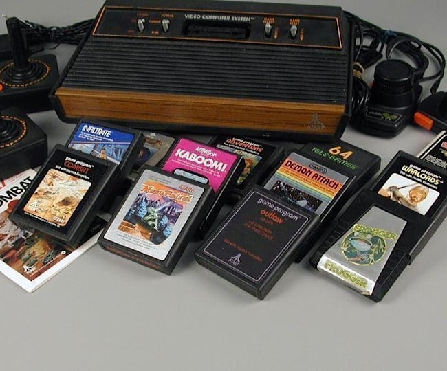

ATARI 2600 (1977)
Atari 2600, originalmente vendido como Atari Video Computer System ou Atari VCS até novembro de 1982, é um videogame projetado por Jay Miner e lançado em 11 de setembro de 1977 nos Estados Unidos e em 1983 no Brasil. Considerado um símbolo cultural dos anos 80, foi um fenômeno de vendas no Brasil entre os anos de 1984 a 1986 e seus jogos permanecem na memória de muitos que viveram a juventude naquela época.
Especificações Técnicas:
Bits: 8 bits
CPU: Variante do processador 6502 (Real: 6507)
Frequência de operação: 1,19 MHz
Memória RAM: 128 Bytes
Memória ROM: Capacidade máxima de 4 kB.
Resolução: 160x192 (NTSC) / 160x228 (PAL)
Cores: 128 cores no sistema NTSC, pouco menos no sistema PAL.
Som: 2 canais (cada um com um chip próprio)
Top 10 jogos:
- 1º Pac-Man
- 2º Donkey Kong
- 3º Space Invaders
- 4º River Raid
- 5º Asteroids
- 6º Pitfall!
- 7º Enduro
- 8º Adventure
- 9º Megamania
- 10º Pong